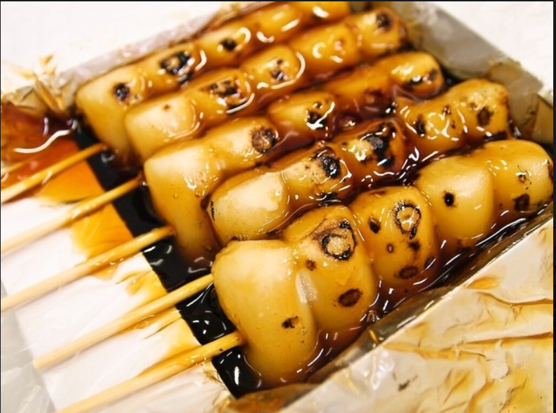
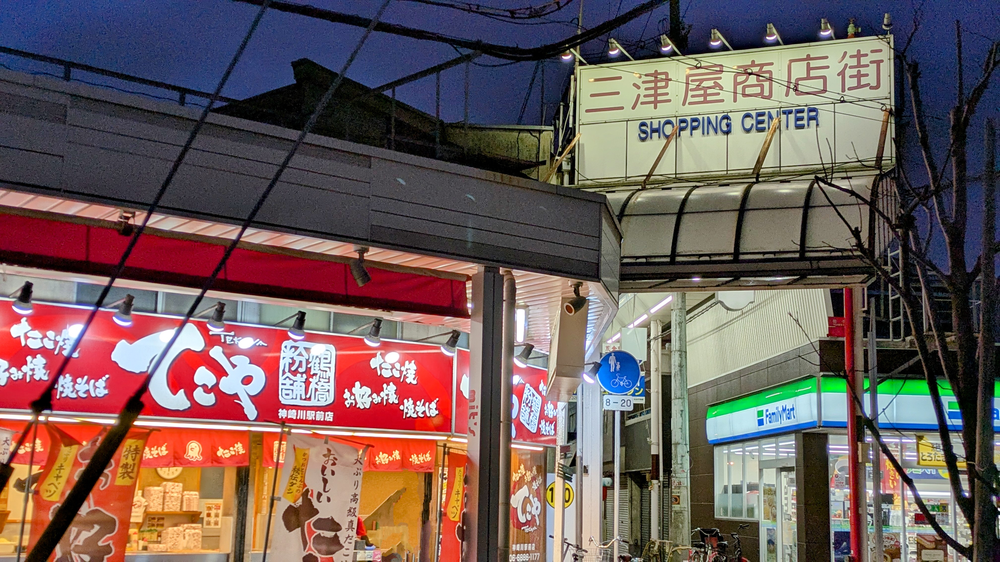

道頓堀のグリコ看板、通天閣、大阪城──有名な観光スポットを一通り巡ったあと、「もう少し大阪の素顔が見たい」と感じたことはないだろうか。梅田から電車でわずか5〜10分の場所に、旅行ガイドにはほとんど載らないローカルエリアがある。それが十三（じゅうそう）と神崎川・淀川区だ。
ここには、昭和23年創業の和菓子店が今も駅前に行列を作り、「ねぎ焼き」という大阪のソウルフードが生まれ、昭和の面影を残す商店街が今も人の往来を見守っている。派手さはない。でもその分、本物の大阪の日常がある。
十三（じゅうそう）── ねぎ焼きとみたらし団子の街
阪急電車で梅田（大阪梅田駅）から2駅、約5分。十三駅を降りると、東西南北に伸びる商店街のアーケードが迎えてくれる。ガイドブックには「飲み屋の街」として紹介されることが多いが、それは夜だけの顔に過ぎない。昼間の十三には、地元客に長く愛されてきた食の名店が揃っている。
喜八洲総本舗のみたらし団子
十三西口の商店街を歩いていると、香ばしい焦げ目の匂いに足が止まる。喜八洲総本舗（きやすそうほんぽ）だ。昭和23年（1948年）の創業以来、十三で作り続けてきた和菓子店で、名物は注文を受けてからその場で焼いて仕上げる俵型のみたらし団子。丸型ではなく俵型にすることでタレがよく絡むという工夫が施されており、「大阪産（もん）名品」にも選ばれている。
「電車が来る前に」「次の信号が変わるまでに」──そんな地元客の声に鍛えられた、日本一速いみたらし団子の包装技術が生んだ味。
店員さんの超高速包装はテレビやSNSでも話題になり、メディアに複数回取り上げられてきた。みたらし団子のほか、酒饅頭やきんつばも人気。創業の地・十三本店は阪急十三駅西口から徒歩約1分という抜群の立地にある。

ねぎ焼き──十三が発祥のソウルフード
十三は「ねぎ焼き」の発祥地として知られている。九条ねぎをたっぷり使ったお好み焼きのような料理で、地元では「十三といえばねぎ焼き」というほど代名詞的な存在だ。その発祥の店が、1965年創業の「ねぎ焼やまもと」。十三駅西口から徒歩約3分の場所で、今も行列が絶えない。大阪名物のたこ焼き・お好み焼きとは異なる、このエリアならではの味をぜひ体験してほしい。
十三の「今」
十三はいま、少しずつ変わりつつある。老舗に交じって、個性的なラーメン店やカフェ、立ち飲みバーが増えてきた。古いものと新しいものが混在する、この過渡期の空気感こそ、いま十三を歩く理由かもしれない。ぐるなびによると十三は「古くから歓楽街として知られてきたが、駅前から続く商店街には庶民的かつ個性的な飲食店が数多く並んでいる」エリアだ。十三駅は阪急神戸線・宝塚線・京都線の3路線が乗り入れ、梅田から2駅で乗り換えなしでアクセスできる。
🚃 十三へのアクセス
阪急神戸線・宝塚線・京都線が交わるターミナル駅。大阪梅田駅から阪急電車で約5分（2駅）。神崎川駅とは1駅隣（梅田からは3駅・約8分）。
神崎川・三津屋 ── 昭和の商店街と一級河川の街
十三の隣駅、神崎川。梅田からは3駅・約8分。この駅を降りてすぐ南に伸びているのが、三津屋商店街だ。全長約550メートルのアーケードに、食堂・居酒屋・精肉店・八百屋が混在する。ピーク時には約150店舗が並んでいたという商店街は、地域の人たちに今も愛される日常の場所として機能し続けている。
ヤカーリングが生まれた商店街
三津屋商店街には、ユニークな歴史がある。2006年のトリノ冬季五輪で日本カーリングチームの活躍に触発された商店街の人たちが、「ヤカーリング」という競技を考案した。底にキャスターをつけてセメントを詰めたやかんを滑らせて的を狙うというもので、「ヤカーリング世界大会」として年2回開催されている。「みつやの日」（3月28日：「みつや＝328」の語呂合わせ）や8月の「みつやどんたく」といったイベントも、この商店街ならではの賑わいを生んでいる。
商店街の食べ歩きのお供に欠かせないのが、駅から徒歩数分圏内に揃う個性的な飲食店たち。ミシュランガイド掲載経験もある讃岐うどん「白庵」、海鮮居酒屋「春夏秋冬」、洋食カフェ「Yoruca」など（詳しくは神崎川周辺グルメ記事を参照）。

神崎川──中世から続く一級河川
「神崎川」という地名は、大坂から山陽道へ向かう街道の渡し場「神崎の渡し」がここに栄えたことに由来するとされている。江戸時代の初めにはすでに「神崎川」という名が定着していたという。農業用水・水運として古くから使われてきたこの川は、今も淀川水系の一級河川として大阪北部を流れている。川沿いをゆっくり歩くと、街の歴史の深さがじんわりと伝わってくる。
このエリアから大阪を旅する
十三と神崎川──この二つのエリアは、梅田という大ターミナルのすぐ隣にありながら、観光地とは別の時間が流れている。創業から70年以上続く和菓子店、発祥の食文化が今も息づく街角、昭和の面影を残す商店街。それらはすべて、電車に乗ってわずか数分で辿り着ける。
旅の「スキマ」に歩いてみてほしい。道頓堀の賑わいに疲れた午後、USJの興奮が冷めた夕方、あるいは京都への日帰りを終えた夜。梅田に戻る前に、一駅だけ寄り道する。それだけで、旅の記憶がぐっと厚みを増す。
十三も神崎川も、
Oideyaから歩いて行ける。
Oideya Guest Houseは神崎川駅の徒歩圏内。三津屋商店街はすぐそこ、十三は電車で1駅（約3分）。梅田・なんばへの観光を楽しみながら、朝は地元のうどん屋に並んで、夜は下町の居酒屋でゆっくり飲む──そんな滞在が、この場所なら実現します。
空き状況を確認する →